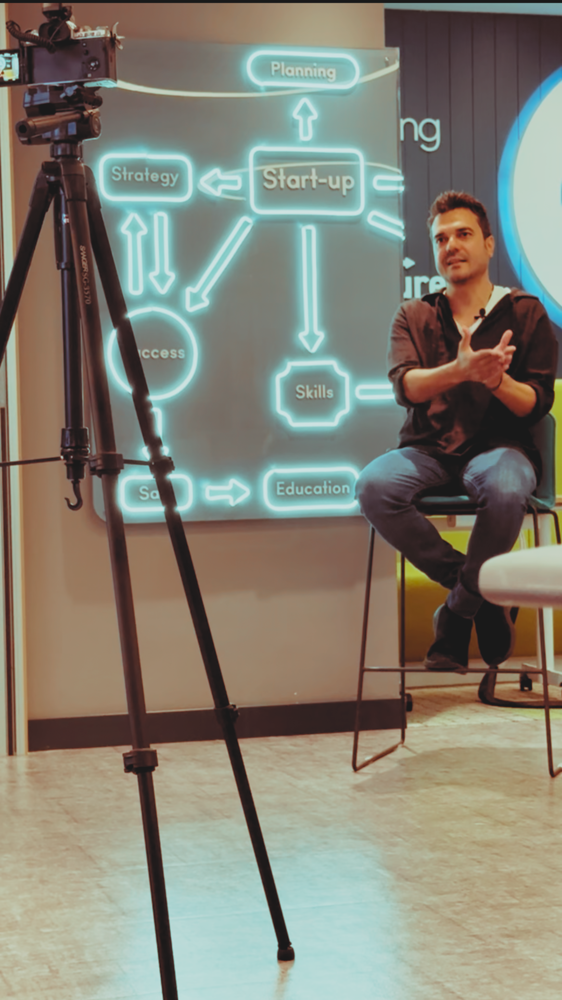

A tiny local bridge that pipes your Claude Max subscription into OpenClaw. Same machine. No API key. No extra bill. No catches.
100% free · MIT licensed · Built by one person team · Works in 90 seconds
curl -fsSL https://install.marsirius.ai | bash
Installs everything (Homebrew, Claude CLI, Maxbridge.app) — takes ~90 seconds. Also mirrored on GitHub Releases ↗.
Your apps talk to Maxbridge. Maxbridge talks to your Claude Max.
After Anthropic blocked Claude subscriptions from third-party tools, OpenClaw power users went from $200/mo Max plans to $5,000/mo API bills overnight.
I was one of them. So I built Maxbridge.
It's free, open source, and runs entirely on your Mac. No API key. No extra bill. No legal gray area — uses Anthropic's own Claude CLI, which Anthropic re-allowed in April 2026.
Built in my spare time. Released as a gift to the OpenClaw community. No paid tier. Ever.

Three rules, baked into the architecture.
Maxbridge binds 127.0.0.1. No inbound from the internet. No telemetry. Your prompts go from your Mac directly to Claude — not through our servers.
claude setup-token runs once per install. No cross-machine session sharing.
The OAuth session lives in macOS Keychain, same as Claude CLI. Maxbridge never reads, transmits, or caches it.
claude setup-token in the browser (the only manual step, ~45s), then greets you. You're on your Max plan.
100% free · MIT licensed · No card · No email
Prefer to inspect first? Download each asset (install.md, install.sh, DMG + SHA256) from GitHub Releases ↗.
claude in Terminal does. Anthropic re-allowed CLI usage for third-party orchestration in April 2026. Same user, same Mac, same keychain.